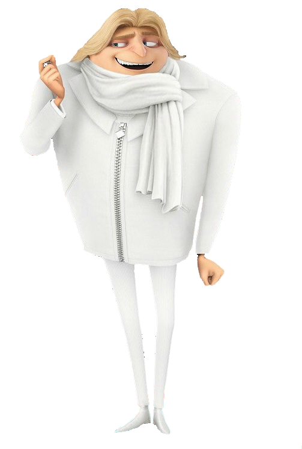
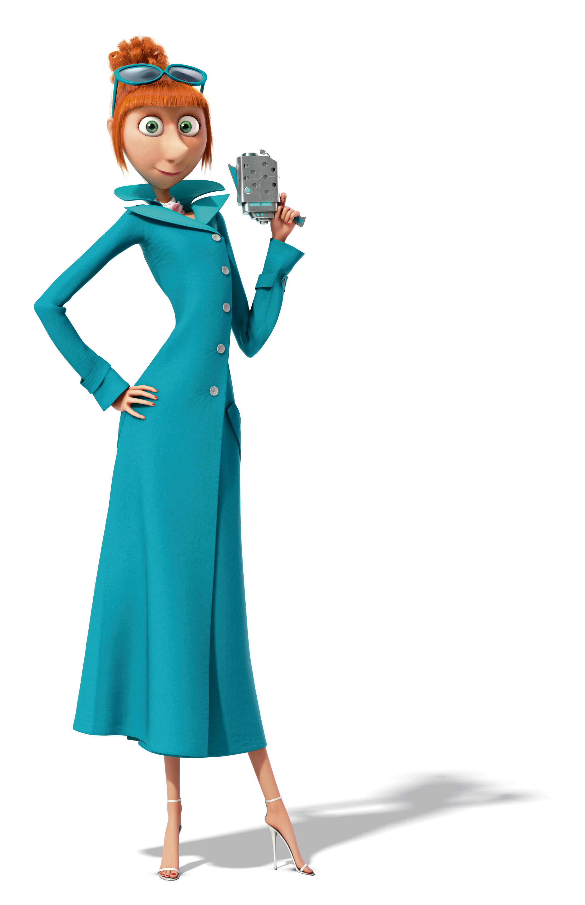
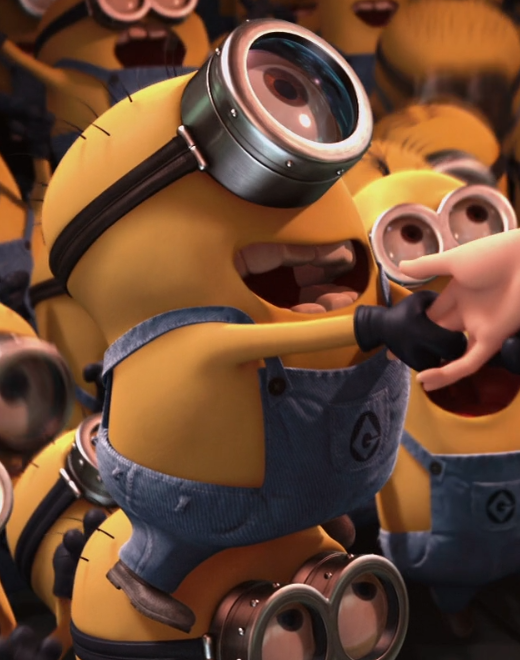
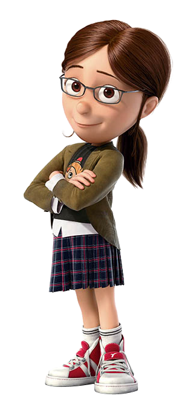
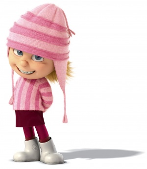
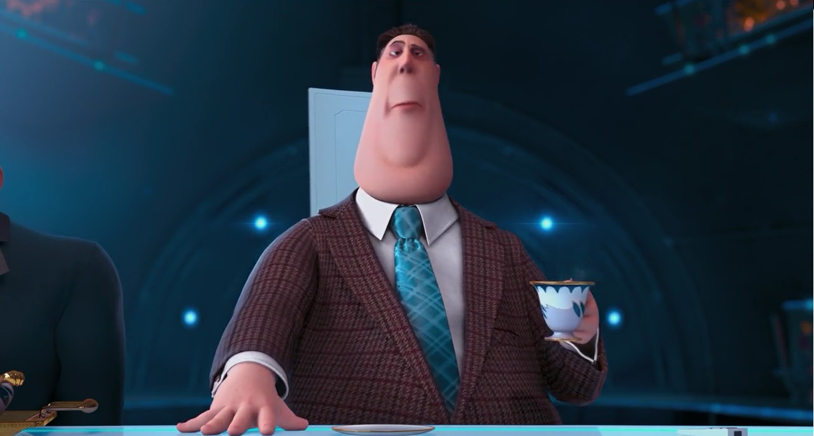
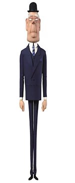
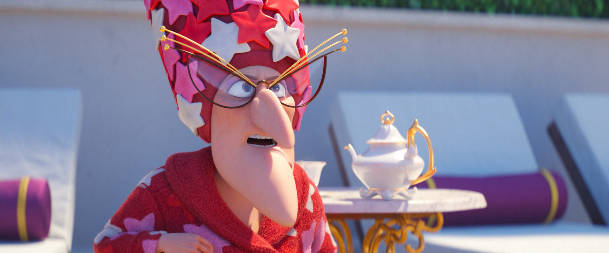
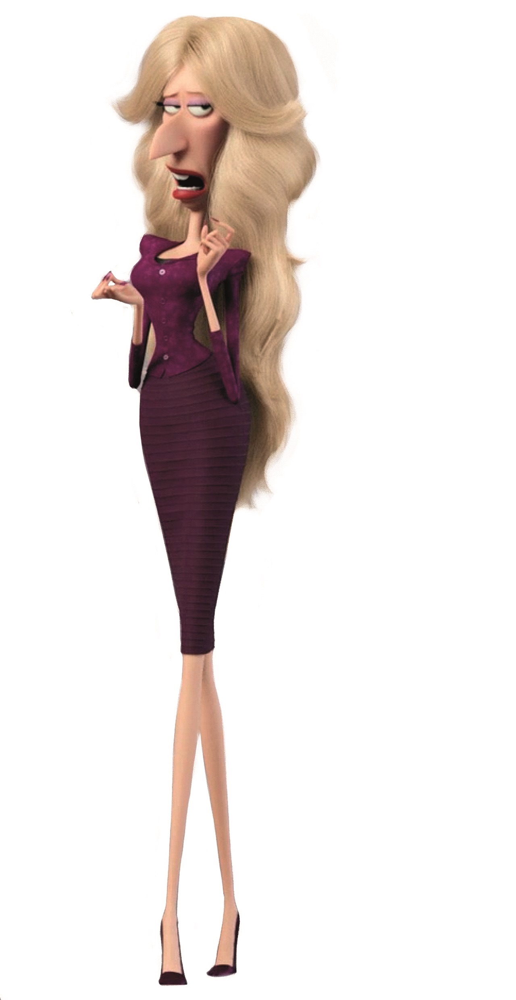

Despicable Me 3
Characters
Gru
Voiced by Steve Carell
Felonius Gru is the main character of Despicable Me, Despicable Me 2, and Despicable Me 3, alongside Mel and
a minor character in Minions. He is often referred to by his surname Gru, was formerly a supervillain and
jelly manufacturer and a consultant for the Anti-Villain League.
Born from the family with long line of villainy and formerly the world's greatest villain, Gru has been
ousted by Vector, who had stolen the Pyramid of Giza and been bestowed the honor of pulling off the "crime
of
the century". In response, Gru unveils his plan for an even more impressive crime; the theft of the Moon.
When
his plans are interrupted by Vector, Gru becomes the adoptive father of three girls: Margo, Edith, and
Agnes.
 Source
Source
Dru
Voiced by Steve Carell
Dru Gru is one of the main characters in Despicable Me 3, the twin brother of Felonius Gru and son of Robert
and Marlena Gru, Lucy Wilde's brother-in-law, and the adoptive paternal uncle of Margo, Edith, and Agnes.
After
the reunion with his brother and his family, Dru looks forward to learn some skills of being a villain from
him,
though Gru had been an Anti-Villain League agent and quit villany for a while. Dru is also owner of Dru's
mansion and Dru's villain wheels.
Similar to his identical twin brother, Dru has a unique appearance with a long pointed nose just like his
mother, Marlena. But unlike Gru, who is bald, he has a full head of blonde shaggy hair, inherited from his
father, and wears a white suit, scarf and shoes, as opposed to Gru. His eyes are blue, and he is
left-handed.

Source
Lucy Wilde
Voiced by Kristen Wiig
Lucy Wilde is a rookie agent of the Anti-Villain League. She is the love interest, later wife of Felonius
Gru. She is one of the main characters in the movies Despicable Me 2 and Despicable Me 3.
Initially assigned to find Gru and bring him to the AVL's headquarters, she later on becomes Gru's
partner in hunting down the thief of the PX-41 serum.

Source
Kevin the Minion
Voiced by Pierre Coffin
Kevin is one of the Minions. He had a supporting role in Despicable Me.
He is a one-eyed minion who first had short buzz cut hair but then became
combed hair when he is back into his normal size.

Source
Margo
Voiced by Miranda Cosgrove
Margo Gru is one of Felonius Gru and Lucy Wilde's adopted daughters and older sister to Edith and
Agnes.
She appears in Despicable Me, Despicable Me 2 and Despicable Me 3.
Margo is the oldest of the three orphan girls that Gru adopts. Before she was adopted, she was an
orphan horribly treated by Miss Hattie. She, like her younger sisters, wished to be adopted by somebody who
would love them. She is very disapproving of Edith's mischief, shown where Edith jumps in puddles
which gets her and Agnes wet, and also when she breaks a vial of acid in Gru's kitchen.

Source
Edith
Voiced by Dana Gaier
Edith Gru is the adopted middle child of Felonius Gru and Lucy Wilde. She has an older sister,
Margo, and a younger sister, Agnes. She appears in the Despicable Me series.
Edith has dark bluish-grey eyes, light blonde shaggy cut hair and freckles. She wears a striped pink
knit cap with ear flaps and tassels, even in bed. At first, she is seen wearing a matching sweater with a
red skirt and dark purple leggings with dark purple socks and white boots.

Source
Silas Ramsbottom
Voiced by Steve Coogan
Silas Ramsbottom is the former director of the Anti-Villain League and the boss of Agent Lucy Wilde. He
appears in Despicable Me 2 and Despicable Me 3.
He is a plump, brown haired man with a brown striped suit, striped brown pants, a white collar shirt, and a
blue necktie. His accent suggests that he may have originated from England. His
background is
completely unknown.

Source
Fritz
Voiced by Steve Coogan
Fritz is a supporting character in Despicable Me 3, he is the elderly butler of Dru Gru.
Fritz first appeared when he tries to go to Gru's home when the minions crowd him and leave him. He
then arrives the next morning he arrived at Gru's home when he tells him about Dru, his twin brother.
When Gru and Lucy arrives Fritz comes with them and Edith pranks him by putting apiece of paper on his back
saying kick me. He then is seen throughout the film.

Source
Marlena Gru
Voiced by Julie Andrews
Marlena Gru (also known as Gru's Mom) is Felonius Gru and Dru Gru's mother, Lucy Wilde's mother-in
law, Robert Gru's ex-wife, and the adoptive paternal grandmother of Margo, Edith and Agnes. She is a
minor character in Despicable Me, and has made two silent cameos in Despicable Me 2 and Minions.
Marlena has a prominent chin and a tall beehive-like hairstyle. Despite her size, she is very strong
and skilled in karate, and is capable of kicking a punching bag with so much force that it knocked her
karate instructor across a room. She has a long nose that is typically seen throughout the Gru bloodline.

Source
Valerie Da Vinci
Voiced by Jenny Slate
Valerie Da Vinci is the former tertiary antagonist in Despicable Me 3. She is the current leader of
the Anti-Villain League and the successor of Silas Ramsbottom. In the film, she fires Gru and Lucy Wilde
for failing the mission to catch Balthazar Bratt.
Valerie is a very skinny woman with long blonde hair, blue eyes, and a big pointed nose. She wears a
purple pencil dress with a blazer and high heels of the same color.

Source